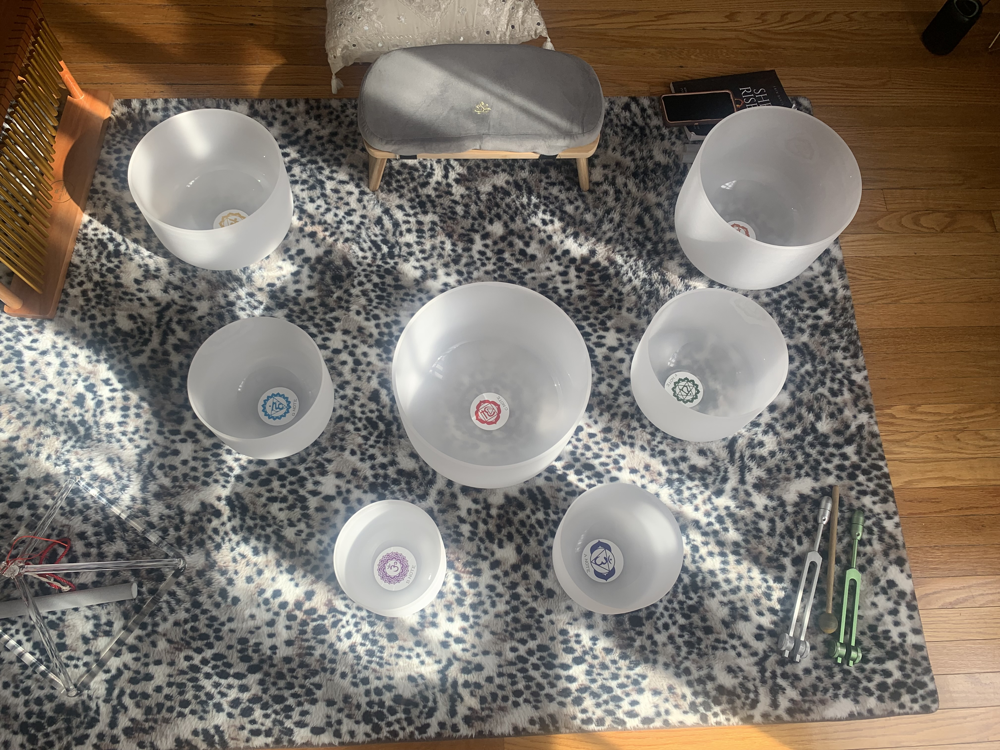
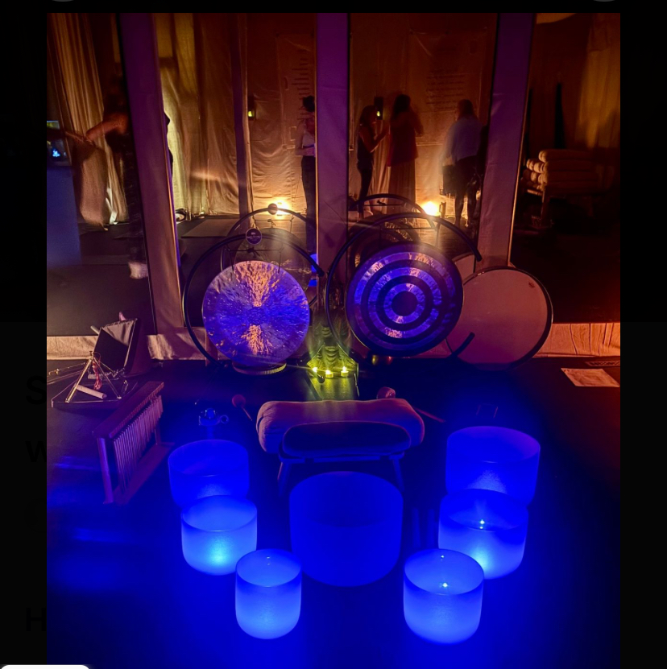
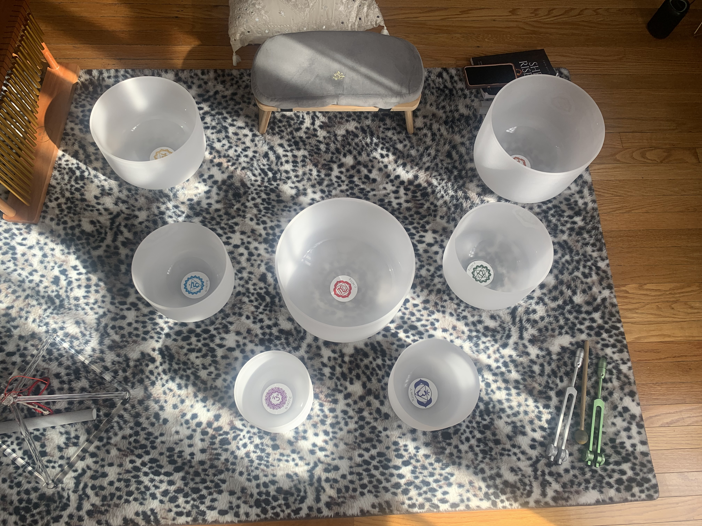
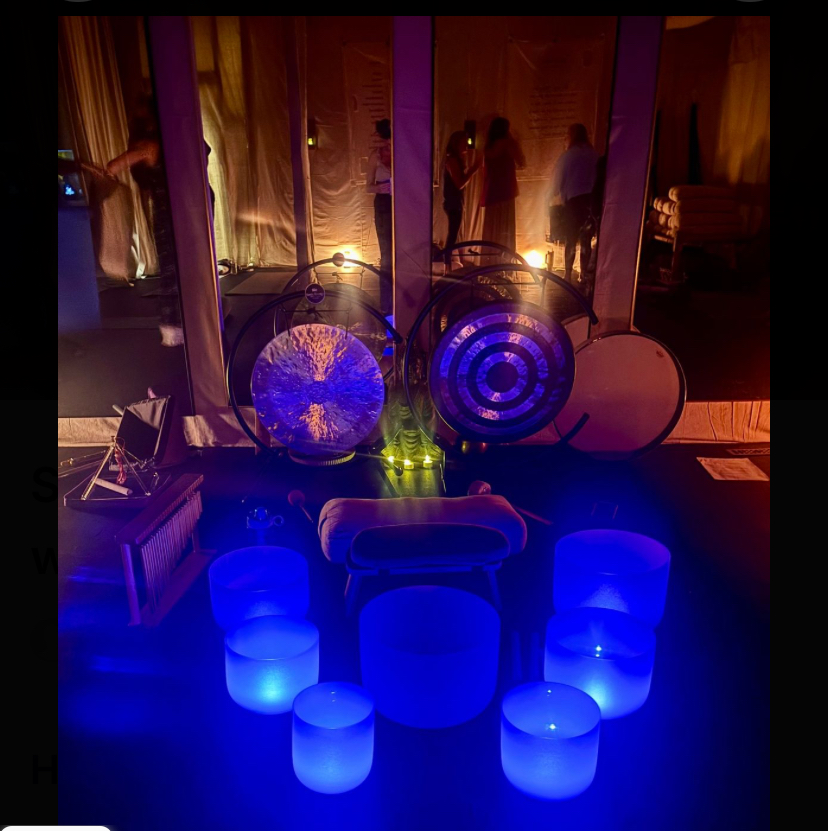

Sound Bath
 



Erin Banta RMT, CSH, OM
Erin Banta is a Reiki Master Teacher, Certified Sound Healer, and Ordained Minister dedicated to supporting others in reconnecting with their inner power and innate capacity to heal. With a therapeutic approach that blends energy work, vibrational sound therapy, and intuitive presence, Erin creates deeply restorative experiences that nurture both the emotional and physical body.
She incorporates tuning forks, crystal singing bowls, gongs, and other multi-instrumental sound frequencies to help calm the nervous system, balance the subtle energy field, and encourage the release of stored tension and stress. Erin has completed Reflexology Level 1 and is currently continuing her reflexology studies, integrating grounding and restorative techniques that encourage relaxation and energetic flow.
Before stepping fully into her healing work, Erin earned a Diploma with Distinction as a Special Needs Teaching Assistant in Ireland, prior to relocating to the United States. This foundation shaped her compassionate, patient-centered approach and her deep belief in honoring individual needs, emotional safety, and the mind-body connection.
Through her private sessions, workshops, and group sound bath meditations, Erin holds space for transformation, emotional release, and the remembrance of one’s inherent worth.
See our Sound Bath availability here.